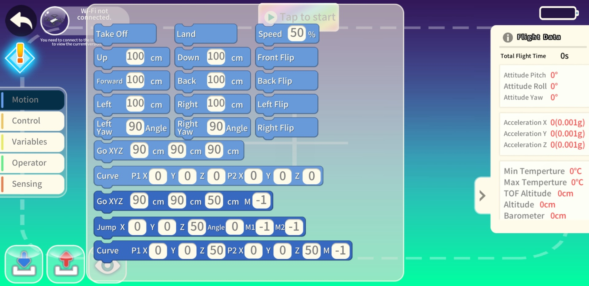

My Journey in the Infocomm Club
2023: Joining iSTEM Academy
Dunman Secondary does not allow students to join the Infocomm Club in their first year, instead, we have to join the iSTEM Academy first consisting of Infocomm, Media, Makers and Green Clubs all in one. As a result, in sec 1, was a trial year where in each term, we got to experience each of the clubs individually, with guidance from the seniors of each club as well as our teachers. As a result, secondary 1 felt like a year of exploration, where I got to try out each of the clubs and see which one I was most interested in. I found that I was most interested in the Infocomm Club, as I enjoyed learning about technology and coding, and I felt that the Infocomm Club would provide me with more opportunities to explore these interests as I was keen on exploring the robotics activities that the club engages in.
2024: Joining the Infocomm Club
Our first challenge was preparing for the WRO Future Innovators competition. To do so, we had to go through basic training coding and building using the EV3 Lego Platform to come up with a robotic solution that solves a real-world problem. This forced me to think about not just the technical aspects, but also the creative and collaborative elements of problem-solving. There were many challenges, with the biggest being making our prototype functional within the given constraints. Our solution was a robot that would help pick up trash along beaches by scanning for it with a rotating IR sensor and navigating to it to pick it up.

In the end, there was not any particular element of our solution that impressed the judges so we were not able to win anything but regardless of that, it was still an amazing experience.
2025: Becoming Vice President of the Infocomm Club
We kicked off the year with training for a drone competiton, DOC 2025. This was a very different experience from the WRO Future Innovators competition, as it was more focused on the technical programming drones to navigate obstacle courses and complete missions. For this, we had to use the TELLO platform which necessitated using our PLDs and using an app.

We also had to come up with a solution (albeit without making a physical prototype) to a real-world problem around a theme, SG60: The Past, Present and Future. We went for the future theme and came up with a creative solution to install holograms in drones for an on-demand therapy service where drones would fly into the customer's homes and connect them with a therapist.

In the midst of this, farewell party for our seniors was around the corner and the next EXCO would also be appointed. After some suggestions among the members during previous sessions, the teachers revealed the new EXCO members on the farewell day. I was delighted to be selected as Vice President! I was proud yet also apprehensive about my responsibility but yet, with the support of the other members, I felt at ease.

DOC 2025 Competition
One of the main challenges we faced was working with the TELLO app as the app was buggy and would frequently crash and fail to save code causing a lot of lost progress.

Regardless, we persevered and were prepared for the competition. On the day, we walked in confident but when we flew our drones, a problem arised. The drones started drifting and missing targets. Try as we might, we were not able to resolve it and lost all hope, only being able to score a meezly 20 out of 200+ points. However, it wasn't over yet. In somewhat low spirits, we later went to present our drone solution to the judges and unbeknownst to us, they were really impressed. So much so that we won 1st place for best presentation!

Winning this award gave us a huge boost in morale, which would be especially helpful for the next competition we were about to face.
WRO 2025 Robo Mission Competition
While we were training for DOC 2025, we were also preparing for the WRO 2025 Robo Mission Competition. This competition required us to design and build a robot that could navigate a complex course and complete various tasks using a the LEGO Spike Prime platform. It was a challenging experience that pushed our technical and creative limits. While we were unable to win, I was still proud of what we were able to do and the experience would prove valuable for a competition of a similar, but larger scope the following year.

Events Galore!
After the competitions, we had a few events to prepare for. Namely, an iSTEM Academy Bonding Event showcasing what each club does and Open House. As Vice President, me and the President both came up with and presented the slides to the audience of iSTEM Academy members. One thing we had trouble with was figuring out how we grew as CCA besides the usual STEM and perseverance manthras everybody's used to hearing. However, we realised that not every benefit is direclty gained. Sometimes all you get is good experiences or increased appreciation for CCA members which we made sure to mention.
Then, it was open house time, and we showcased our projects to the public interested in coming. I was specifically in-charge of coming up with, and operating a drone demo that was also a photo-booth since the drones came with cameras. The visitors really enjoyed this method of learning what we do and one group even took the photos from the drone home and that made me really happy.
2026: Ending on a high note
With the new year came new opportunities and challenges. We only took part in 1 competition, First Lego League 2026, but it was a great learning experience. In this competition, it was like WRO Future Innovators & Robo Mission combined. Essentially, we had to build and code 2 robots, one for navigating an obstacle course and complete missions (which is the main one), and another to come up with a solution to solve a problem faced by archeologists once again using the LEGO Spike Prime platorm. There were many never seen before challenges, but we tackled them head-on and learned a lot in the process.
On competition day, we went in with high hopes. We first started off with presenting our solution which was a robot that would scan archeological sites and report its status back to archeologists to ensure safety and attach to their backs using an exoskeleton (in concept). The judges were very impressed but gave feedback that our solution may not be very feasible. Yet, it was still good so we finished with high morales and were ready for the mission segment.

During the mission segment, we had 3 attempts to do the course and gain as many points as possible. After a somewhat good first attempt and decided to try doing more missions to get more points and qualify for finals. However, some mistakes reasulted in the robot performing worse in those later 2 rounds so our score was not good enough for the finals and we did not win. Despite that, I felt very proud because I contributed a lot to making our robot as good as it was. It made me confident that I can learn how to be competent at programming robots.

The End of the line (or is it?)
With the conclusion of FLL, my time as the vice president was coming to an end. To celebrate the end of CCA before the farewell, us EXCO planned a bonding session for the Sec 4s to have fun and socialise. Motivated to make one last contribution before my resignation, I decided to write (sort of), direct and edit a video montage of all the experiences we had as a cohort. It was highly praised for its quality and if you don't believe it, you may watch it for yourself below.
And with that, my time in the Infocomm Club officially came to an end. I was sad in a way because of how quickly time flew but I rest easy knowing that the future of the club is in good hands. Overall, I am grateful for the experiences and skills I gained during my time in the club, and I look forward to applying them in future endeavors.